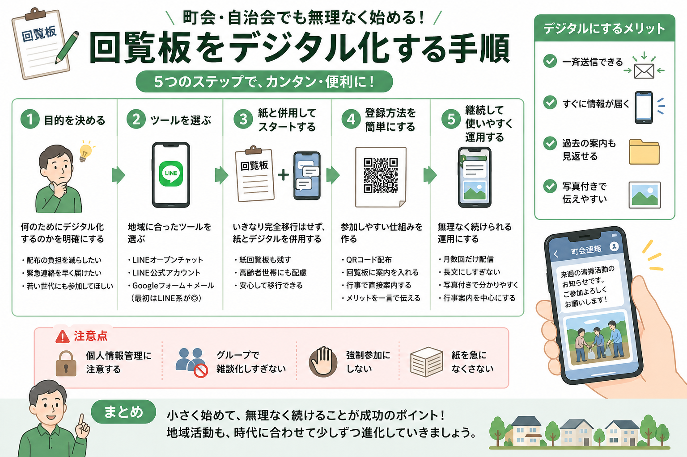

地域活動の中で感じたこと、町会運営の工夫、誰かの役に立つリアルな経験を発信しています。地域が少しでも明るく、住みやすくなるヒントを届けたいと思っています。
7月1日、急きょ隣の町会と合同で会議をすることに。夏祭りでの共同出店の打ち合わせです。班長さんも一緒の合同会議は初めて。不安半分、ワクワク半分です。


町会・自治会の回覧板をLINEオープンチャットでデジタル化する手順を、実際の経験から解説。QRコードの作り方、高齢者への配慮、登録者を増やすコツまでまとめた保存版です。

5月のプレ開催を経て、名前を変えて第1回を開催。大人9名・子ども7名が参加し、アンケートでは満足の声が多数。町会未加入の方の参加もありました。
町会の班の数を見直そうと考えています。世帯数の偏りをならすため、12班から10班への再編を検討中。簡単ではありませんが、みんなが続けやすい形を目指します。
LINEオープンチャットの登録者が約50人になりました。加入は約200世帯。まずは150人を目標に、無理なく少しずつ広げていきたいと思います。
隣の町会の班町会議に参加してきました。公民館の共同運営や会計の引き継ぎなど、これまで不透明だった部分が見えてきました。夏祭りも共同で出店することになりました。
今年度2回目の班町会議を開催。神社の運営、回覧板のデジタル化、班の見直し、盆踊りの出店など、地域の課題について班長さんたちと話し合いました。
小学3年生向けの防災特別授業を開催。新聞紙で作る防災グッズに挑戦しました。20人ほどの子どもたちが参加し、班長さんの協力もあって時間ぴったりで終えることができました。
紙の会員証とデジタル会員証、両方を一から作り直しました。デザイン・印刷データの作成から、スマホで使えるデジタル版の開発まで、その記録をまとめました。
落ち葉が落ち着いた代わりに今度は細かい花が大量に落下。石柱の間の雑草取りをしつつ、コンクリートの目地に入り込んだ花びらと格闘しました。
5月30日の小学3年生向け防災授業に向けて、新聞紙でスリッパ・食器・コップを作る折り方を練習。能登地震でも活躍した知恵を、子どもたちに伝えられるよう準備しました。

「地域のつながりをもっと気軽に」をテーマに開催したプレイベントのレポート。大人約20名・子ども約10名が集まり、マリオカート大会も大盛り上がりでした。
長年放置されていた掃除用具置き場の笹・雑草を除去。根がしっかり張った笹に苦戦しながらも2時間格闘し、暗かった場所が明るくすっきりとよみがえった。

PTA会長の経験から見えた地域の課題。「このままじゃまずい」と感じた理由と、町会長に立候補した思いを語ります。
新しいことに挑戦するまでのリアルな記録。なぜWordPressでなくGitHubを選んだのか、その理由を書きました。
メールとネット閲覧しかできなかった私が、GitHub PagesとCloudflareで無料ブログを公開するまでの手順を公開します。